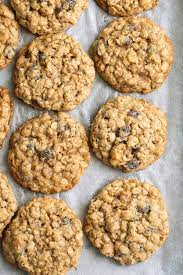

Oatmeal Cookie

Description
Oatmeal cookies are a light and delicious snack that are pretty simple to make.
You dont need the most experience needed when it comes to baking and it might only take
2 hours to make 24 cookies for everybody to enjoy. They are also a
healthy alternative to other cookies. Now lets get on with what you will need
to make these and how you will make them.
Ingredients
- 1 cup butter, softened
- 1 cup white sugar
- 1 cup packed brown sugar
- 2 eggs
- 1 teaspoon vanilla extract
- 2 cups all-purpose flour
- 1 teaspoon baking soda
- 1 teaspoon salt
- 1 1/2 teaspoons ground cinnamon
- 3 cups quick cooking oats
Steps
- In a medium bowl, cream together butter, white sugar, and brown sugar.
- Beat in eggs one at a time, then stir in vanilla.
- Combine flour, baking soda, salt, and cinnamon; stir into the creamed mixture.
- Mix in oats, cover, and chill dough for at least one hour
- Preheat the oven to 375 degrees F. Grease cookie sheets.
- Roll the dough into walnut sized balls, and place 2 inches apart on cookie sheets.
- Flatten each cookie with a large fork dipped in sugar
- Bake for 8 to 10 minutes in preheated oven.
- Allow cookies to cool on baking sheet for 5 minutes before moving to wire rack to cool completely.
- Finally serve them.